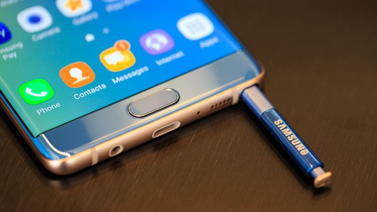

Samsung pede para que clientes devolvam o Galaxy Note 7
Android Studio
O Android Studio é um novo e totalmente integrado ambiente de desenvolvimento, que foi recentemente lançado pela Google para o sistema operativo Android. Foi desenhado para fornecer novas ferramentas para o desenvolvimento de apps e para fornecer uma alternativa ao Eclipse, atualmente o mais amplamente utilizado IDE.O Android Studio permite-lhe ver qualquer alteração visual que fizer à sua app em tempo real, e também pode ver como irá parecer numa série de diferentes dispositivos Android, cada um com diferentes configurações e resoluções, simultaneamente.

Tablet
Mais um dispositivo da Samsung surgiu em um novo teste de benchmark. Depois do que parece ser a atualização do Galaxy A7 para 2017, e depois o que deve ser o modelo do ano que vem do Galaxy A3 no GFXBench, agora tudo indica que é um tablet, com um processador Snapdragon 625 que surgiu no Geekbench, sob o código SM-T587P. O dispositivo possui um processador Qualcomm Snapdragon 625 de oito núcleos com arquitetura 64 bit e clock máximo de 2,02GHz. Para auxiliar o processamento, o aparelho é equipado também com 2GB de memória RAM. Tudo isso rodando o sistema Android 6.0.1 Marshmallow. A pontuação atingida pelo tablet foi de 808 no single-core e 3180 no mult-core.
Lançamento Android Nougat para Moto G 2013 e 2015
Nougat, a nova versão do sistema operacional da Google, só está disponível aos privilegiados donos de smartphones da linha Nexus por enquanto. O primeiro não Nexus a receber a atualização é o LG V20. Marcas como Motorola, Sony, Asus, além de diversas outras, utilizam o Android, mas o Nougat não será um produto acessível a aparelhos mais antigos – ao menos não tão cedo.
Fonts http://www.tecmundo.com.br
Mundo da informação e suas tecnologias!
A partir de agora, todos que quiserem aproveitar os recursos da versão de testes do comunicador vão ter muito mais facilidade para isso. Pois é.... O WhatsApp Beta está chegando à Google Play. Quem quiser testar a versão Beta do WhatsApp terá apenas que se inscrever como Beta Tester e aguardar pela aprovação. Depois disso, o usuário será autorizado a realizar o download diretamente na Google Play para testar recursos antes de eles chegarem à versão estável.
Apple anuncia novos fones beats fio iphone 7
Durante a conferência da Apple, Phil Schiller, vice-presidente de marketing da companhia, revelou uma nova linha de produtos Beats que serão compatíveis com o chip W1 wireless. Os modelos são o novo Solo 3 Wireless, o Powerbeats 3 e um novo modelo chamado Beats X.
O software que vai permitir assistir 3D sem óculos
Intel, Bullnet e a Caixa deve investir três milhões de euros em um programa desenvolvido por engenheiros
em Tenerife para incorporar esta tecnologia em
telefones celulares.
O 3D Natural é um sistema de captura de imagem que utiliza algoritmos baseados em uma linguagem de programação complicada, mas para usá-lo, o usuário só terá de puxar o gatilho.
Pressionar o botão, e a câmera captura um único tiro e, em seguida, o software gera todos os pontos de vista possíveis.